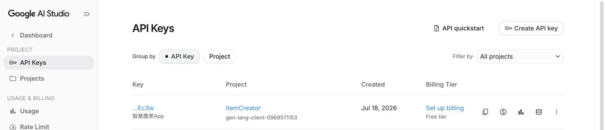
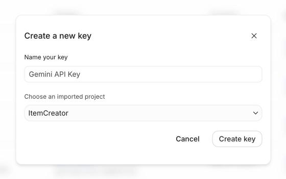
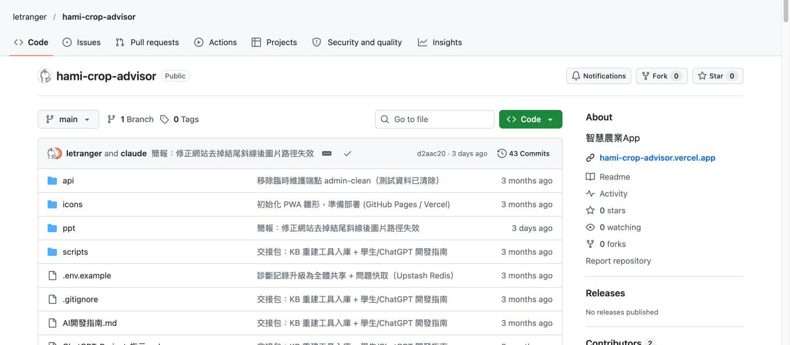
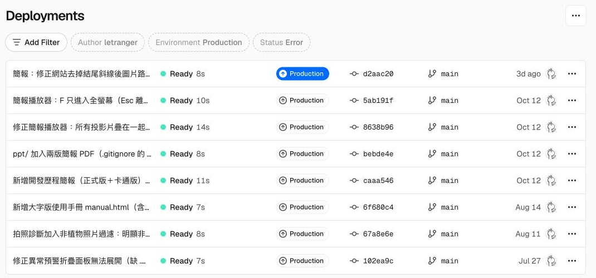
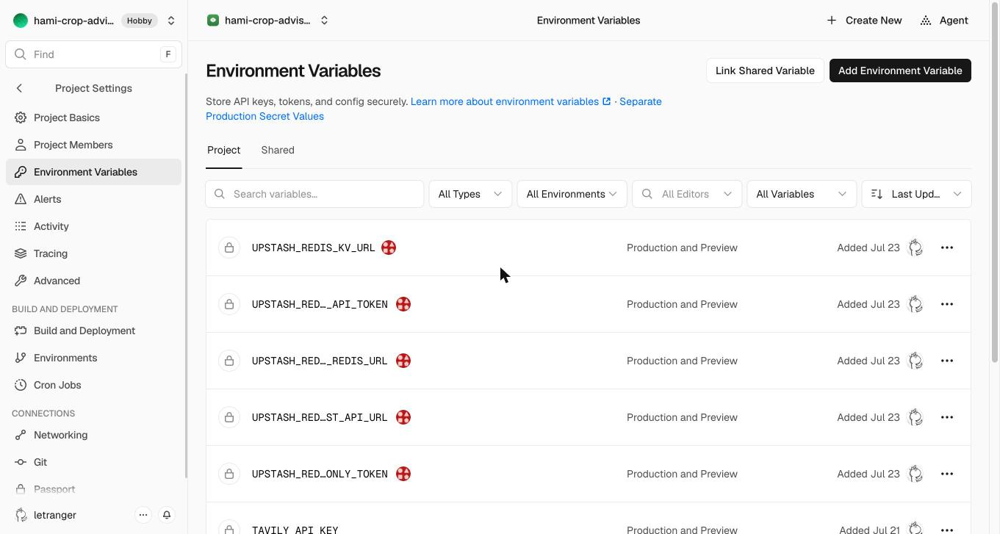

豐泰盃 AI 應用創意實作競賽 · 麥寮高中
溫室植栽專家系統
是怎麼做出來的
一張 AI 生成的畫面，一群不太會寫程式的人，
和一位 AI 程式夥伴：Claude Code
2026 年 7 月 6 日 → 8 月 14 日 · 38 次程式提交
全貌
八個步驟，五週完成
① 7/6 上午
收到 AI 畫面
雲龍老師傳來 ChatGPT 模擬圖
② 7/6 下午
做出雛形
Claude Code 寫出可操作的網頁
③ 7 月中
收到手冊
8 本作物栽培手冊 PDF
④ 7/18
問 Claude
怎樣讓 AI 讀懂這些文件？
⑤ 7/18
建向量資料庫
手冊切段、轉成向量
⑥ 7/18 → 7/20
額度爆掉
改請第二個 AI：Groq
⑦ 7/6 起
放上網路
GitHub ＋ Vercel
⑧ 7/20 → 8/14
不斷除錯
修 bug、為農友改介面
日期依 GitHub 提交紀錄整理 · 02
步驟 1
起點：一張 ChatGPT 畫的 App

雲龍老師用 ChatGPT 生成了概念海報和五張手機畫面。
畫面很漂亮，但只是圖片：按鈕不能按、沒有任何程式。
我們的任務：把圖變成真的能用的 App。
03
步驟 2
把圖丟給 Claude Code，當天就有雛形
把畫面給 Claude Code，用說的告訴它要什麼。它直接在電腦裡寫程式、開檔案。
先做「看起來會動」的版本：畫面和按鈕是真的，診斷結果先用範例假裝。
16:12
7/6 第一版完成
20:17
同一晚加上 iPad 版
第一個決定：做網頁 App，不做 iPhone App
| 比較 | iPhone App | 網頁 App |
|---|---|---|
| 開發者年費 | US$99 | 免費 |
| 上架審查 | 要 | 不用 |
| Android 能用 | 不能 | 能 |
| 需要 Mac＋Xcode | 要 | 不用 |
手機「加入主畫面」後，用起來就像 App。
04
步驟 3
雲龍老師傳來 8 本栽培手冊
洋香瓜手冊
溫室番茄栽培手冊
小番茄栽培手冊
小黃瓜栽培手冊
甜椒栽培手冊
＋3 本英文版
85 MB
都是 PDF，一本幾十頁。
問題來了：AI 一次讀不了這麼多，也不能每次都從頭翻一遍。
05
步驟 4
問 Claude：怎麼把文件做成 AI 能讀的資料庫？
先想走捷徑
把 GPTs 或 Gemini Gem 直接嵌進網頁？
→ 官方不允許，此路不通
Claude 的建議
自己做 RAG：先查資料，再寫答案
像幫 AI 蓋一座「小圖書館」

06
步驟 5
Claude 的答案：轉成向量資料庫
1 讀出文字
PDF → 文字
用 PyMuPDF 把每一頁的字抓出來
2 切成小段
每段約 700 字
記下作物名和頁碼，方便附出處
3 變成向量
Gemini 嵌入
每段變成 768 個數字，意思像的段落數字也像
4 存起來
kb.json
277 段、約 2 MB，一個檔案就是資料庫
為什麼用 Gemini？ Claude 沒有提供嵌入服務，Gemini 有，而且免費。
為什麼用 JSON 檔？ 免費、不用架資料庫伺服器，只要做一次。
07
步驟 5（續）
農友問一個問題，背後發生什麼？
1
農友輸入：「洋香瓜葉子有白色粉末怎麼辦？」
2
問題也變成 768 個數字（Gemini）
3
和 277 段比一比，挑出最像的幾段手冊內容
4
把這幾段交給語言模型，寫成白話答案
5
回答附上出處：《洋香瓜手冊》第 N 頁
08
步驟 6
免費額度爆了：找來第二個 AI
429 generate_content_free_tier_input_tokens
7/18 20:53
加上「等一下再重試」
沒用
7/18 20:56
換成額度較寬的 flash-lite
還是沒用，卡了兩天
7/20 15:18 解決
寫答案改用 Groq（Llama 3.3 70B）
一樣免費、不用綁卡
Gemini：負責「找資料」（向量）
Groq：負責「寫答案」
09
步驟 7
放上網路：GitHub ＋ Vercel
自己的電腦
Claude Code 改好程式
GitHub
保存程式碼和每一次修改紀錄
Vercel
30～60 秒自動更新網站
農友手機
開網址、加入主畫面
為什麼不用免費的 GitHub Pages 就好？
AI 服務的「鑰匙」（API 金鑰）不能寫在網頁裡，否則誰都能偷用。Vercel 能在伺服器端跑程式，把鑰匙藏起來。
hami-crop-advisor.vercel.app · 10
步驟 7（續）
申請了六個服務，花費 0 元
| 服務 | 在 App 裡負責什麼 |
|---|---|
| GitHub | 保存程式碼 |
| Vercel | 架網站、藏鑰匙 |
| Google AI Studio | Gemini：找資料（向量） |
| Groq | Llama 3.3：寫答案 |
| Tavily | 上網搜尋最新農業資訊 |
| Upstash Redis | 共享診斷紀錄、快取答案 |
0 元
全部免費額度，
不用綁信用卡
（計畫上限 NT$6,000）
11
步驟 7 深入 · 技術細節
AI 寫好程式之後，
還有四件「不是寫程式」的事
1
拿鑰匙
到 Groq、Google AI Studio 申請 API 金鑰
2
存程式
把程式碼送上 GitHub，每次修改留紀錄
3
架網站
Vercel 讀 GitHub 的程式碼，自動部署成網址
4
藏鑰匙
金鑰只放 Vercel 環境變數，程式碼裡沒有
接下來十一張，每一件事都用真實的設定畫面說明，照著做就能複製到自己的專案。
技術細節 1 / 12
拿鑰匙 ① Groq（負責寫答案）
console.groq.com/keys：登入、按一顆鈕、複製

1
用 Google 帳號登入，不用填信用卡
2
左上 API Keys → 右上 Create API Key
3
取名字（我們叫「雲林智慧農業App」）
4
複製 gsk_ 開頭那串，只會顯示這一次
畫面上看到的
金鑰事後只顯示頭尾（gsk_…ee2y），網站自己也不再給你看全文；有「到期日」，到期要重新建一把並更新 Vercel 設定。
技術細節 2 / 12 · 金鑰名稱 GROQ_API_KEY
拿鑰匙 ② Google AI Studio（負責找資料）
aistudio.google.com/api-keys：每家長得差不多

金鑰清單：每把只露出最後四碼，旁邊標 Free tier

Create API key → 取名、選專案 → Create key
同一套流程
登入 → Create → 取名 → 複製。Tavily、Upstash 也一樣，會一家就會全部。
分開命名
一個專案一把鑰匙、名字寫清楚用途，外洩時只要刪掉那一把。
技術細節 3 / 12 · 金鑰名稱 GEMINI_API_KEY
存程式 ① 送上 GitHub
五行指令，但我們是用一句話叫 Claude 做
git init
git add .
git commit -m "初始化 PWA 雛形"
git remote add origin https://github.com/letranger/hami-crop-advisor.git
git push -u origin main
實際對 Claude Code 說的是：「幫我 commit 並 push 到 GitHub」。指令是它打的，我們只看結果。

github.com/letranger/hami-crop-advisor：公開儲存庫，右側 About 直接連到正式網站
事前：到 github.com 註冊、New repository 建一個空的，取好名字
卡關：第一次 push 會問密碼，但 GitHub 已不收密碼，要用 gh auth login 登入一次
技術細節 4 / 12
存程式 ② 之後每一次修改
每次 push 都是一筆紀錄，也是一次自動上線

中文說明
每筆 commit 寫一句做了什麼，三個月後回頭看得懂
兩個作者
「letranger and claude」：Claude Code 會把自己也簽上去
綠色勾勾
Vercel 回報這筆已成功部署；紅叉就是上線失敗
改好程式
commit ＋ push 到 main
Vercel 偵測到 → 30～60 秒後網站更新
手機重新整理就是新版
技術細節 5 / 12 · 到今天 43 筆提交
架網站 ① GitHub 的程式碼怎麼變成網址
Vercel：用 GitHub 帳號登入，匯入儲存庫，按 Deploy
1 · 登入
vercel.com → Continue with GitHub，Vercel 才看得到你的儲存庫
2 · 匯入
Add New → Project，找到 hami-crop-advisor 按 Import
3 · 設定
Framework 選 Other（純靜態＋api/）；Root Directory 維持根目錄
4 · Deploy
一分鐘後得到 hami-crop-advisor.vercel.app

Deployments 頁：一筆 commit ＝ 一次部署，建置 7～14 秒，最新一筆就是正式站
Vercel 怎麼知道程式改了？
匯入時 Vercel 在 GitHub 裝一個「通知」：main 一有新 commit 就重新部署。右邊每一列的 commit 代號和 GitHub 上的一模一樣。
專案裡的 vercel.json
只做兩件事：網址去掉 .html；執行 api/ 時把 kb.json（知識庫）一起帶著。
技術細節 6 / 12
架網站 ② 把鑰匙交給 Vercel
Settings → Environment Variables：名字配鑰匙，存檔


1
進專案 → Settings → 左欄 Environment Variables
2
右上 Add Environment Variable，Key 填程式約定的名字（如 GROQ_API_KEY）
3
Value 貼上剛複製的金鑰 → Save。存進去後畫面只剩鎖頭，看不到值
4
到 Deployments Redeploy 一次，新變數才生效
上半部五個 UPSTASH_… 是 Storage → 建 Upstash Redis → 連結專案時自動塞進來的；我們手填的只有下半部三把，日期就是申請金鑰的那幾天。
技術細節 7 / 12 · 名字要和 .env.example 一模一樣
藏鑰匙 ① 程式碼裡沒有鑰匙，鑰匙只在 Vercel
手機只跟自己的後端講話，後端才拿鑰匙去找 AI
農友手機（app.js）
fetch('/api/ask', {question})
看得到原始碼，但裡面沒有任何金鑰
Vercel 後端（api/_rag.js）
process.env.GROQ_API_KEY
執行時才從環境變數讀鑰匙，外人看不到
Groq / Gemini
Authorization: Bearer gsk_…
只有後端對 AI 的這一段才帶鑰匙
✗ 錯誤寫法（在 app.js）
const KEY = 'gsk_abc123…';
fetch('https://api.groq.com/…', {headers:{Authorization:'Bearer '+KEY}})
任何人按「檢視原始碼」就拿走你的鑰匙，額度被刷光
✓ 正確寫法（在 api/_rag.js）
const k = process.env.GROQ_API_KEY;
if (!k) throw new Error('伺服器未設定 GROQ_API_KEY');
鑰匙的「值」從來不出現在程式碼，只出現在 Vercel 設定裡
技術細節 8 / 12 · 這就是步驟 7 說「不用 GitHub Pages」的真正原因
藏鑰匙 ② 三道保險，和怎麼自己檢查
本機用 .env、雲端用環境變數、GitHub 永遠沒有
① 本機測試 → .env
鑰匙寫在自己電腦的 .env 檔，npx vercel dev 會讀它
② .gitignore 擋住
.env
.env.*
!.env.example
git 永遠不會把 .env 送上 GitHub
③ 只給範本
GEMINI_API_KEY=
GROQ_API_KEY=
TAVILY_API_KEY=
.env.example 進版控，只有名字沒有值
上線前自己檢查（三分鐘）
在網站按右鍵「檢視原始碼」，搜尋 gsk_ 和 AIza：要找不到
到 GitHub 儲存庫搜尋同樣兩個字串：要找不到
萬一真的推上去了：立刻到該網站刪掉那把、重建一把，改歷史紀錄沒用
技術細節 9 / 12
上網查 ① 讓 App 能搜尋網路
不是用 Google 搜尋，而是用 Tavily：專門給 AI 用的搜尋 API

app.tavily.com → Overview 往下捲就是 API Keys；按「＋」建新的，眼睛圖示看全文，複製圖示複製
申請
Google 帳號登入即可，免信用卡；金鑰 tvly- 開頭
額度
免費每月 1,000 次搜尋；問過的問題有快取，實際用不到
設定
Vercel 環境變數加一列 TAVILY_API_KEY，Redeploy
為什麼不直接用 Google？
Google 搜尋回傳的是「給人看的網頁」：標題、網址、一小段摘要。要給 AI 讀還得自己再去抓每一頁、清掉廣告和選單。
Tavily 一次就回傳每個結果的正文片段，程式一行就能貼給模型。Google 自家的 Custom Search API 也要綁 Google Cloud 專案和信用卡，對學生專案太重。
技術細節 10 / 12 · 金鑰名稱 TAVILY_API_KEY · 程式位置 api/_rag.js webSearch()
上網查 ② 搜尋結果怎麼和 RAG 合作
手冊和網路同時查，再交給一個模型合寫成一個答案
① 農友的問題
「洋香瓜葉子有白粉怎麼辦？」
先查快取：問過就直接回
②A 栽培手冊（RAG，可信、優先）
Gemini 把問題變向量 → 和 kb.json 的 277 段比對 → 取最像 5 段，附作物＋頁碼
②B 網路（Tavily，補充、僅供參考）
問題自動加上「台灣 溫室栽培 病蟲害 防治」→ 進階搜尋 → 取 4 筆：標題、網址、內文片段（各最多 1,200 字）
兩邊同時進行（Promise.all）；任何一邊失敗就當作沒結果，另一邊照常回答
③ Groq（Llama 3.3）合寫
收到兩包資料：【手冊 1～5】＋【網路 1～4】
規則：手冊優先；手冊沒有才用網路；每個重點結尾標出處；兩邊都沒有就說不知道、建議問改良場
④ 一個答案
…摘除病葉並噴施碳酸氫鉀（手冊：洋香瓜 第 12 頁）；近年也有農友用…（網路：農業知識入口網）
下方分兩欄列出處；答案存進快取
技術細節 11 / 12 · 程式位置：api/ask.js（並行）、api/_rag.js webSearch()＋generateMerged()
上網查 ③ 交給模型的那一包，長什麼樣子
不是「請上網幫我查」，而是把查到的貼給它、規定它怎麼用
system（規則，程式寫死）
你是台灣溫室栽培的農業專家助理…用繁體中文回答，語氣簡單、步驟清楚。
你會拿到兩種資料：「栽培手冊」（可信，優先採用）與「網路搜尋結果」（僅供參考）。
1) 優先根據手冊回答；手冊沒有、或需要較新資訊時，才引用網路。
2) 每個重點結尾用括號標註依據，例如（手冊：洋香瓜 第12頁）或（網路：來源標題）。
3) 只根據提供的資料作答，不要杜撰；兩邊都沒有就誠實說明並建議諮詢農業改良場。
user（每次查到的資料，程式組出來）
【栽培手冊】
【手冊1｜洋香瓜 第12頁】白粉病初期於葉面出現白色粉狀…
【手冊2｜洋香瓜 第13頁】…
【網路搜尋結果】
【網路1｜瓜類白粉病防治 - 農業知識入口網】https://kmweb.moa.gov.tw/…
白粉病好發於…
問題：洋香瓜葉子有白粉怎麼辦？
為什麼這樣設計：模型沒有上網能力，也不該自己決定信什麼。搜尋由我們的程式做，資料由我們貼給它，信任順序也由我們規定，它只負責「用白話整理」。
技術細節 12 / 12 · 這就是 RAG 的本意：Retrieval（我們查）→ Augmented（貼給它）→ Generation（它寫）
步驟 8
不斷除錯：遇到的真實問題
| 遇到的問題 | 原因 | 怎麼解決 |
|---|---|---|
| 程式推不上 GitHub | 不再接受密碼 | 改用專用通行憑證 |
| 手機上定位、天氣不出來 | 瀏覽器沒有定位權限 | 到設定按「允許」 |
| 改了程式，手機還是舊版 | App 一直讀舊快取 | 改成「先上網抓新版」 |
| 預警面板點了打不開 | 少一條展開的樣式 | 補上樣式（7/27） |
| 拍人像也給出病害診斷 | 沒先檢查是不是植物 | 依綠色比例先過濾（8/11） |
| 同時問太多，AI 忙不過來 | 免費額度有上限 | 同題答案存起來重用 |
12
步驟 8（續）
也在除「農友看不懂」的 bug
7/20
字放大
全站字級和底部按鈕都放大，照顧長輩視力
7/20
拿掉英文
「AI Smart Crop Advisor」等英文全部移除
7/20
主功能置頂
拍照診斷、症狀診斷變成首頁最大的兩張卡
7/21
一顆按鈕
查手冊＋查網路合併成一次回答，標明來源
7/23
少一層
拿掉重複的「診斷」分頁，入口只留一個
8/14
大字版手冊
可列印，附安裝用 QR code
13
誠實盤點
現在做到哪裡？
已經真的能用
- 問答：查手冊＋查網路，附出處
- 首頁定位與即時天氣
- 全體共享的診斷紀錄
- 非植物照片過濾
- 網址上線、可加入主畫面
還是示範版
- 拍照辨識病害：目前用範例結果，建議內容是真的
- 溫濕度感測：還沒接上 ESP32
下一步：接上影像辨識模型、接上感測器資料
14
學到的事
想清楚 → 做出來 → 放上去
→ 卡住就問 → 修好再繼續
不用先會寫程式，但要把問題說清楚
卡住時截圖給 AI 看，比自己猜快
免費服務可以混搭，一家不夠就分工
謝謝聆聽 · hami-crop-advisor.vercel.app